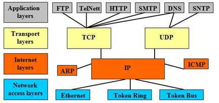

SỰ PHÁT TRIỂN CỦA MẠNG INTERNET VÀ INTERNET OF THINGS
Học kỳ I, năm học 2018-2019
2.SỰ PHÁT TRIỂN CỦA INTERNET.
Tiền thân của mạng Internet ngày nay là mạng ARPANET. Cơ quan quản lý dự án nghiên cứu phát triển ARPA thuộc bộ quốc phòng Mỹ liên kết 4 địa điểm đầu tiên vào tháng 7 năm 1969 bao gồm: Viện nghiên cứu Stanford, Đại học California, Los Angeles, Đại học Utah và Đại học California, Santa Barbara. Đó chính là mạng liên khu vực (Wide Area Network - WAN) đầu tiên được xây dựng.
Thuật ngữ "Internet" xuất hiện lần đầu vào khoảng năm 1974. Lúc đó mạng vẫn được gọi là ARPANET. Năm 1983, giao thức TCP/IP chính thức được coi như một chuẩn đối với ngành quân sự Mỹ và tất cả các máy tính nối với ARPANET phải sử dụng chuẩn mới này.

Giao thức TCP/IP
Năm 1984, ARPANET được chia ra thành hai phần: phần thứ nhất vẫn được gọi là ARPANET, dành cho việc nghiên cứu và phát triển; phần thứ hai được gọi là MILNET, là mạng dùng cho các mục đích quân sự.
Giao thức TCP/IP ngày càng thể hiện rõ các điểm mạnh của nó, quan trọng nhất là khả năng liên kết các mạng khác với nhau một cách dễ dàng. Chính điều này cùng với các chính sách mở cửa đã cho phép các mạng dùng cho nghiên cứu và thương mại kết nối được với ARPANET, thúc đẩy việc tạo ra một siêu mạng (SuperNetwork). Năm 1980, ARPANET được đánh giá là mạng trụ cột của Internet.
Mốc lịch sử quan trọng của Internet được xác lập vào giữa thập niên 1980 khi tổ chức khoa học quốc gia Mỹ NSF thành lập mạng liên kết các trung tâm máy tính lớn với nhau gọi là NSFNET. Nhiều doanh nghiệp đã chuyển từ ARPANET sang NSFNET và do đó sau gần 20 năm hoạt động, ARPANET không còn hiệu quả đã ngừng hoạt động vào khoảng năm 1990.
Sự hình thành mạng xương sống của NSFNET và những mạng vùng khác đã tạo ra một môi trường thuận lợi cho sự phát triển của Internet. Tới năm 1995, NSFNET thu lại thành một mạng nghiên cứu còn Internet thì vẫn tiếp tục phát triển.
Với khả năng kết nối mở như vậy, Internet đã trở thành một mạng lớn nhất trên thế giới, mạng của các mạng, xuất hiện trong mọi lĩnh vực thương mại, chính trị, quân sự, nghiên cứu, giáo dục, văn hoá, xã hội... Cũng từ đó, các dịch vụ trên Internet không ngừng phát triển tạo ra cho nhân loại một thời kỳ mới: kỷ nguyên thương mại điện tử trên Internet.
(Theo bài viết của eqvn.net)